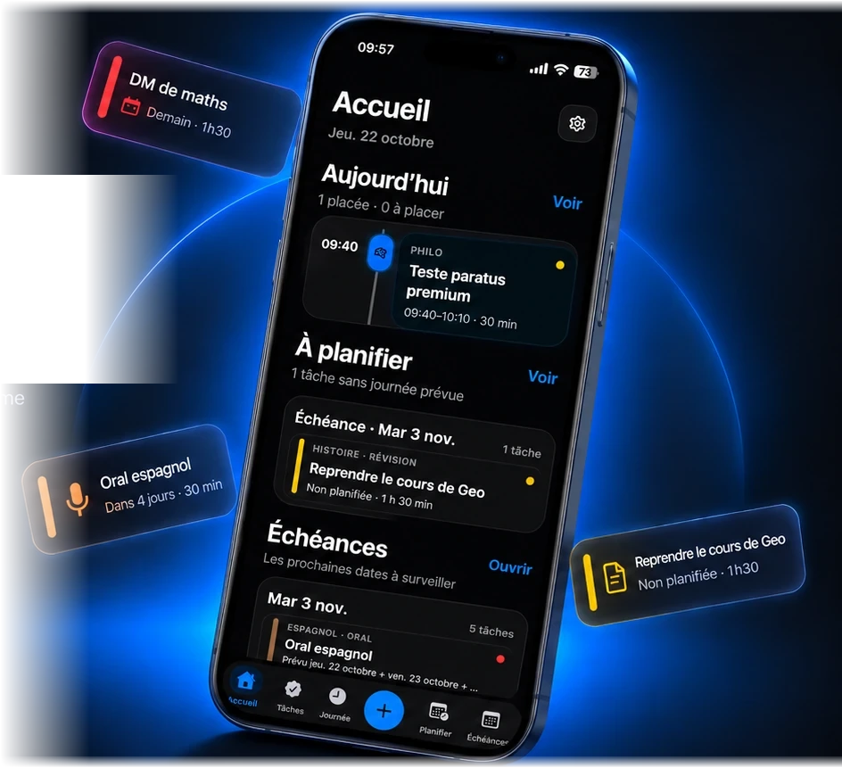
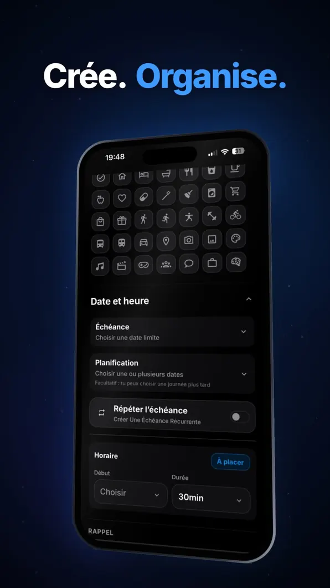
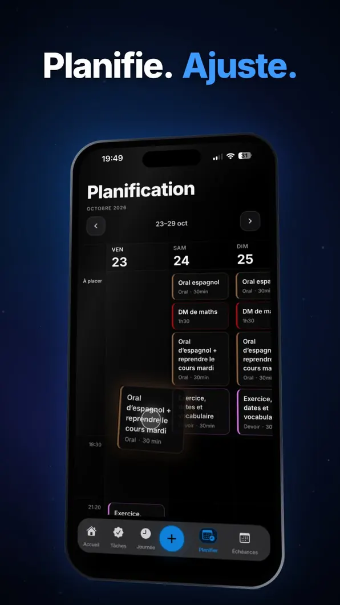
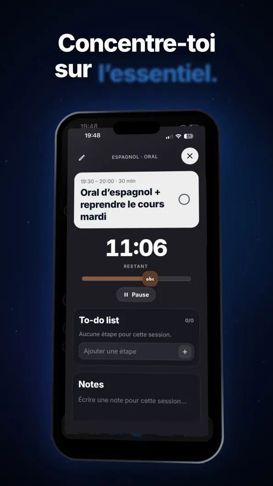

Crée. Organise.
Rassemble toutes tes tâches. Organise-les par matière, type ou priorité, sans perdre de vue l’essentiel.
Tes tâches, tes échéances et ton planning enfin réunis au même endroit. Paratus t’aide à organiser ton quotidien, à ton rythme et à ta façon.
Paratus se prépare à arriver sur iPhone et iPad.

Une façon simple de reprendre la main sur tes journées : tes tâches, ton temps et tes priorités, au même endroit.
Rassemble toutes tes tâches. Organise-les par matière, type ou priorité, sans perdre de vue l’essentiel.
Visualise tes échéances, choisis tes créneaux et adapte ton planning au fil de la journée.
Lance une session Focus associée à une tâche, garde le temps en vue et avance pas à pas.
De la création d’une tâche au temps de concentration, découvre de vrais écrans de Paratus.
Choisis un type, une échéance, une durée. À toi de décider comment organiser ton travail.

Les tâches à placer et ton calendrier restent reliés : tu ajustes, ton organisation suit.

Un minuteur, ta tâche, tes notes : juste ce dont tu as besoin pour te concentrer.

Retrouve l’univers et les fonctionnalités de Paratus dans notre vidéo de présentation.
Tu peux utiliser Paratus sans compte. Si tu te connectes avec Google ou Apple, les fonctionnalités de sauvegarde et de synchronisation sont disponibles pour tes données d’organisation.